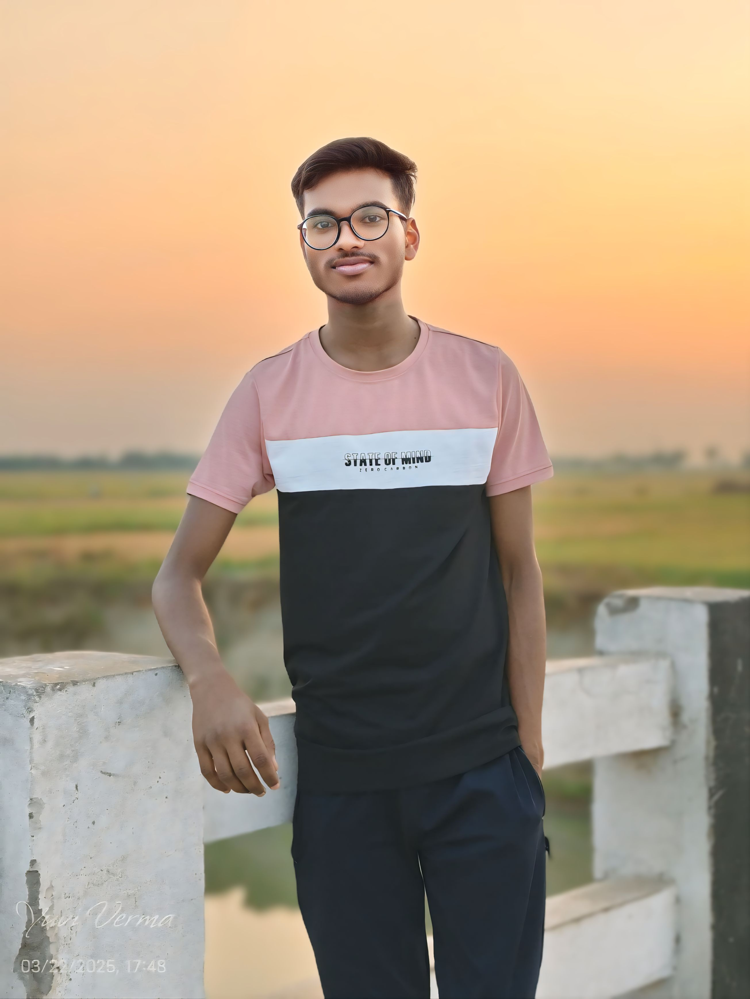

Hi,I am Abhishek Kumar,
Web Developer
Hello! I'm Abhishek Kumar, an 18-year-old Computer Science student at Government Polytechnic Buxar. I'm passionate about technology and aim to become a skilled web developer. I enjoy exploring new web tools and learning how websites work behind the scenes. In my free time, I love playing chess, as it helps me think strategically and stay focused. I'm constantly working on improving my coding skills and turning my passion into a successful career in web development.
